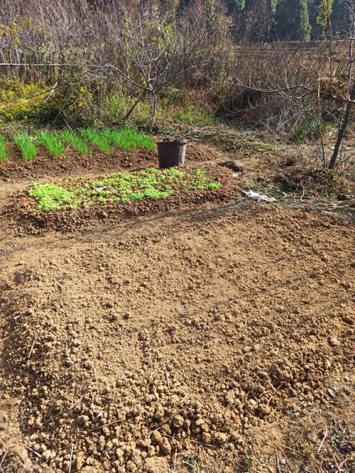
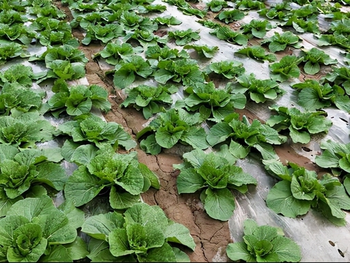
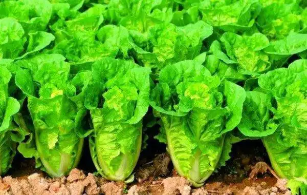
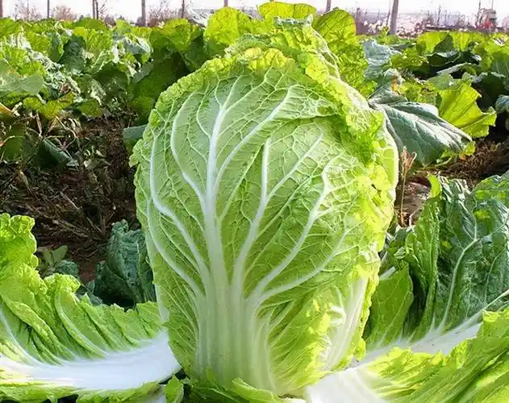

2. 出苗期（3~5天）

播种后3~5天出苗，保持土壤微湿，不能干旱也不能积水。
出苗后避免强光暴晒，适当遮阴，防止幼苗晒伤。

时间：北方一般8月中下旬，南方9-10月，根据当地气温调整。
要点：土壤疏松、细碎，浇透水后撒播或条播，覆土约1cm，不宜过厚。
温度：适合发芽温度 20~25℃。
播种后3~5天出苗，保持土壤微湿，不能干旱也不能积水。
出苗后避免强光暴晒，适当遮阴，防止幼苗晒伤。

长出2~3片真叶后开始间苗，去掉弱苗、病苗，保持株距。
薄肥勤施，以氮肥为主，促进叶片生长。

外叶大量生长，形成“莲花座”，是产量关键期。
保证水肥充足，保持土壤湿润，增施磷钾肥。

白菜开始包心，逐渐紧实，需水量和需肥量最大。
保持均匀浇水，避免裂球，采收前1周减少浇水。

叶球紧实、手感沉重即可采收。
过早包心不实，过晚易开裂、腐烂。